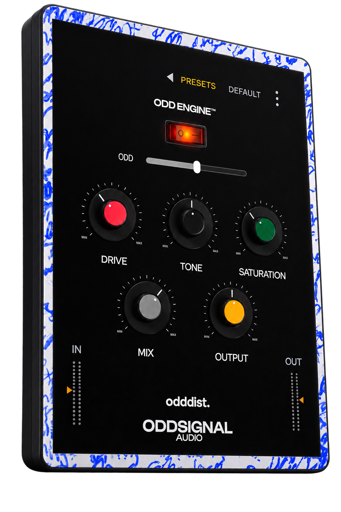

ODDDIST is a distortion and saturation plugin built around ODD ENGINE, a real-time analysis stage that adapts the character of the drive to the signal you feed it, instead of running a single fixed transfer curve. Five controls on the surface; an adaptive core underneath.

No hidden macro here — every knob maps to one internal parameter, so what you see is what you're driving.
| Control | Range | Default | What it does |
|---|---|---|---|
| Drive | 0 – 100% | 35% | Input gain into the saturation stage |
| Tone | 0 – 100% | 50% | Spectral balance of the driven signal |
| Saturation | 0 – 100% | 35% | Depth of the nonlinear shaping |
| Mix | 0 – 100% | 65% | Dry/wet balance |
| Output | 0 – 100% | 50% | Post-stage level compensation |
Input and output trims sit next to the meters, each −24 to +24 dB, for gain-staging without another plugin in the chain.
Static saturation applies the same transfer curve regardless of what hits it — a whispered vocal and a screamed one get identical treatment. ODD ENGINE changes that: it continuously analyzes the incoming signal and uses that reading to shape the behavior of the drive stage in real time, so the response adapts to the dynamics of the material instead of staying fixed.
The engine sits on a dedicated macro, ODD (0 – 100%), which controls how strongly the adaptive behavior is applied on top of your Drive/Tone/Saturation settings.
| Mode | Behavior |
|---|---|
| Off | ODD ENGINE fully bypassed: bit-exact, zero added CPU cost. Pure static saturation. |
| React | ODD ENGINE active. The drive stage responds to the incoming signal's dynamics in real time. |
We're not disclosing the exact analysis/response algorithm — that's the part of ODDDIST that's actually ours — but the architecture around it is straightforward: it's a real-time control path feeding the same saturation stage you already hear in Off mode, not a separate effect bolted on top.
Every stage sits between the same input and output trims, so nothing downstream of ODD ENGINE ever sees a signal it wasn't designed for.
The nonlinear shaping stage runs oversampled internally (4x, via a two-stage half-band polyphase IIR filter) to keep harmonics generated by the drive from folding back as aliasing. This adds a small, fixed latency, which ODDDIST reports to your host at all times — whether ODD ENGINE is On or Off — so switching modes never forces a latency renegotiation mid-session.
No memory is allocated while audio is running. Every parameter is ramped to avoid zipper noise under automation, and the signal path is denormal-safe.
ODD ENGINE's Off mode isn't “engine active at zero,” it's a real bypass of the adaptive path. Static saturation only, no analysis overhead.
The plugin window is freely resizable inside your host, with a locked aspect ratio so the layout never distorts.
| Formats | VST3, Standalone |
| Windows | Windows 10 or later, 64-bit |
| Channels | Stereo in, stereo out only |
| Oversampling | 4x on the drive stage (React and Off both report the same fixed latency) |
| Processing | 32-bit floating point |
| Sample rate | Follows the host |
| MIDI | Not used |
| Automatable parameters | 7 |
| Session state | Saved with your project |
| Presets | 10 factory presets, ordered from subtle to extreme, plus your own |
| Price | Free |
| Version | 1.0.0 |
ODDDIST is free. Download the installer, run it, and it's ready to load in your DAW — no account, no license key.
VST3 and a standalone application, for Windows.
A small, fixed amount from the internal 4x oversampling on the drive stage. It's reported to your host at all times, in both Off and React modes, so nothing shifts when you switch modes mid-session.
It analyzes your incoming signal in real time and adapts the behavior of the drive stage to it, instead of applying one fixed curve regardless of input. Turn it off for classic static saturation, or turn it on to let the plugin react to your material.
Not directly — ODDDIST is stereo in, stereo out. For a mono source, place it on a stereo bus or send.
Yes. No trial period, no feature gating, no time limit.